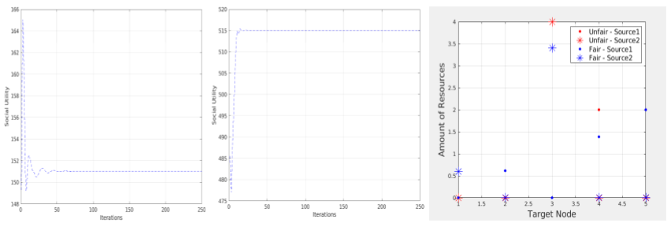

Optimal transport entails finding the most efficient way to allocate a limited amount of resources. However, the most efficient transport plan may not always lead to a fair allocation of resources. In this study, we introduced a framework that incorporates fairness in resource allocation through adding a fairness factor into the optimal transport plan
In the left graph resources are equally distributed from source to target nodes. Though this is fair, this may not be efficent due to location and efficency of the target nodes. In the right graph, the most optimal plan is shown. In this, a target nodes is not getting any resources and it may cause them to shut down which decreases social utility. Neither end of the spectrum is the most ideal and we wanted to find a transport plan that can incorporte both efficency and fairness.
In here you can see the fairness factor omega being implemented. The higher the omega the more fairness is weighted and the lower the omega value the more efficency is weighted. The fairness function is only applied on the target nodes because they are most affected by fairness.
In this algorithm, line 1 indicates that while the transport plan of the source and target do not converge do everything below. Then in line 2 and 3 the transport plans of each source and target nodes are recalulated based on the previous iteration. Then the total transport plan with the fairness algorithm and the langarian multiplier is calculated on each source and target node.
As you can see with the fairness factor incorportated(middlegraph), the social utility the OT function converges at is nearly 5 times higher than the one without it (leftmost graph). In one of the case studies we tried the algorithm on, the transport plan with fairness incorported has resources more distributed across the targets while the one without fairness has almost all resources at one target.